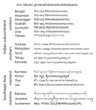

I haven’t had a formal education in Sanskrit. But it is a liturgical language that I chant in every day, not just for Hindu slokas from the Gitā and the Vedas, but also for Buddhist sutras such as the Prajñaparamita Hrdaya Sūtra. A lot of Sanskrit words have made their way into contemporary languages in both South and South East Asia, so I do understand many words.
Same-same but different
But those familiar waters can sometimes be treacherous. The same word could have different meanings in Sanskrit and other languages. False Friends is a Thing, more so in Indic languages than in other language families. I often need to rely on guard-rails such as Sanskrit Dictionary Collections to keep me safe.
Then there are sandhi’s, liasons between words to form compound words. Whilst the individual word may be understandable, the compound word could feel and sound new; you will need to know how the sandhi has been formed in order to untangle the compound word into its constituents.
Same-same not same as sama-sama
Sanskrit has been historically written in range of scripts, down from the earliest Brahmi and Kharosthi scripts, to more contemporary scripts across Asia.
Here’s a good example of how it all intersects. Consider this quote from Kālidāsa mentioned in Wikipedia, written in various Asian scripts:

Figure 2: ‘May Śiva bless those who take delight in the language of gods’ - Kālidāsa. (FromWikipedia)
Sanskrit is written in each of these scripts for liturgical needs in South and South East Asia. The first word is easily understood: it clearly refers to Siva, one of the gods in the Hindu pantheon. The second word is also easily understood: it’s clearly a conjugation of the word raksha or to protect. But wait: how did to protect become bless?
It gets more difficult with the next word, a multi-letter monster in every script mentioned in the graphic. It is a compound word: among others, words meaning ‘language’, ‘god’ and ‘delight’ have been somehow strung together to form a single word. This is where it starts to become complex.
Haksara Wrehastra: Conjunct Letters
For, untangling conjunct words is not just a matter of giving the right amount of spaces. Most Brahmi-originated scripts have conjunct letters, complex rules where letters may be combined in certain combinations to form new letters. 36 consonants can be combined to form 1296 two-letter combinations in Sanskrit, but that is not all. Each of these combinations can be combined with 16 vowels to form even more complex conjuncts. There is no grammatical limit to the number of letters you can combine. At the most extreme, the word कार्त्स्न्य (“entirety”) consists of a five-letter conjunct, र्त्स्न्य (Stiehl 2017).
Whilst I can read many of the scripts listed in Figure 2, I find it easier break conjunct vowels and therefore words into their constituent parts in Telugu script. But that may not be your experience; perhaps you’re used to reading about Ghatōtgacha’s exploits in Balinese script. Which brings us to our first computational challenge: can we transliterate a Sanskrit string into a script of our choice?
1. Writing Sanskrit
1.1 Methods for Transliteration
Note
Transliteration is to convert a string from one script to another without changing the word. This is different from translation, which is to convert a string from one language to another.
A naive suggestion could be that an LLM could draft us a quick method in transliterate Telugu strings to Sanskrit. We tried to get Anthropic Claude 2 to do just that:
For one, Claude didn’t complete the mappings constant, and instead, provided a lazy // ...add remaining mappings comment, which isn’t helpful. For another, this approach won’t work with conjunct vowels at all, unless you list every single one of the combination there is.
We tried again, this time asking for it to be in Python:
Except that… this doesn’t work either. Here’s what happens when we execute the function:
print(transliterate("అందరికీ నమస్కారం"))
అందరికీ నమస్కారం
… which is exactly the same text as the input. I asked Claude what the problem was, and to its credit, it did identify the error: unicodedata.normalize('NFKC') doesn’t convert from the Telugu character-set to Devanagari.
But it didn’t fix the error directly. Only after a few rounds of hallucinations and corrections, did we arrive at this version, where we offset the Telugu character-set by 0x0900 - 0x0C00, which is the difference between the Devanagari and Telugu character-sets:
unit_tests = ["అందరికీ నమస్కారం", # "Hello world" in Telugu"శివో రక్షతు గీర్వాణభాషారసాస్వాదతత్పరాన్", #The Kalidasa quote above"యెలహంక"# See below ]#loop through the unit testsprint(*[transliterate(test) for test in unit_tests], sep='\n')
These work! A key point here is that you should not trust output from LLM’s to work blindly; you must test and validate them, not just with unit-tests, but also with real-world examples. We’ll come back to this point again soon.
A linguistic point in our “unit-tests”. The last example there, యెలహంక, is the Telugu spelling of a Bangalore suburb, also written in Kannada as ಯೇಲಹಂಕ. Transliterating Kannada to Telugu is quite straightforward, as was transliterating to Sanskrit (Devanagari) as येलहंक. But if you read the Devanagari version with Hindi pronunciation in mind, you’ll end up reading it as ‘Yelhank’. That’s incorrect; it should be read as ‘Yelahanka’. This is a good example of False Friends among South Asian languages; Hindi and Sanskrit may be written in the same script, Devanagari, but are to be pronounced differently.
But really, this method needs to be generalized for any South (East) Asian script to any other (whilst noting the potential for False Friends). Let’s expand the method to include Unicode ranges for all scripts.
Code
script_unicode_ranges = {#north'assamese': [(0x0980, 0x09FF)],'bengali': [(0x0980, 0x09FF)],'devanagari': [(0x0900, 0x097F), (0xA8E0, 0xA8FF)],'gujarati': [(0x0A80, 0x0AFF)],'gurmukhi': [(0x0A00, 0x0A7F)], 'oriya': [(0x0B00, 0x0B7F)],'tibetan': [(0x0F00, 0x0FFF)],#south'tamil': [(0x0B80, 0x0BFF)],'telugu': [(0x0C00, 0x0C7F), (0x0C80, 0x0CFF)],'kannada': [(0x0C80, 0x0CFF)],'malayalam': [(0x0D00, 0x0D7F)],'sinhala': [(0x0D80, 0x0DFF)],#SE Asia mainland'thai': [(0x0E00, 0x0E7F)],'lao': [(0x0E80, 0x0EFF)],'myanmar': [(0x1000, 0x109F)],'khmer': [(0x1780, 0x17FF), (0x19E0, 0x19FF)],#SE Asia maritime'balinese': [(0x1B00, 0x1B7F)],'javanese': [(0xA980, 0xA9DF)],'sundanese': [(0x1B80, 0x1BBF)]}# write script_unicode_ranges to a filewithopen('script_unicode_ranges.json', 'w') as fp: json.dump(script_unicode_ranges, fp)def transliterate(text, source_script, target_script): source_range = script_unicode_ranges[source_script] target_range = script_unicode_ranges[target_script] output =""for char in text: source_char_code =ord(char)if in_range(source_char_code, source_range): target_char_code = map_to_target(source_char_code, source_range, target_range)if target_char_code !=0xFFFD: output +=chr(target_char_code)else: output += charreturn outputdef in_range(char_code, ranges):returnany([start <= char_code <= end for start, end in ranges])def map_to_target(source_char_code, source_range, target_range):# Calculate target code point target_char_code = source_char_code + (target_range[0][0] - source_range[0][0])# Check if it is an assigned Unicode characterif (unicodedata.category(chr(target_char_code)) !='Cn'):return target_char_code # If not, map to unspecified character code pointreturn0xFFFD
Quite a few pieces happening in there. To start with, whilst Brahmi-based scripts are similar to each other, they aren’t same ; for instance, the Bengali script does not have a letter equivalent to the Telugu letter వ, whilst Devanagari and other southern and western scripts do. So we have a check to see if the mapped character is a valid Unicode character; if not, we map it to the Unicode replacement character, 0xFFFD.
Let’s first repeat our “unit-tests”.
#print transliterate for all unit_testsprint(*[transliterate(test, 'telugu', 'devanagari') for test in unit_tests], sep='\n')
These work, but let’s try to the Kālidāsa quote with the scripts in Figure 2.
Code
kalidasa_quote = unit_tests[1]#iterate through keys in script_unicode_rangesscripts = [script for script in script_unicode_ranges.keys() if script notin ['devanagari', 'telugu']]table_row_list = [f"{script}| {transliterate(kalidasa_quote, 'telugu', script)}"for script in script_unicode_ranges.keys()]table_row_text ="|\n".join(table_row_list)display_markdown(f"| Script | Transliteration |\n| --- | --- |\n{table_row_text}", raw=True)
Table 1: Recreated List of Scripts showing the Kalidasa quote
Script
Transliteration
assamese
শিো রক্ষতু গীর্াণভাষারসাস্াদতত্পরান্
bengali
শিো রক্ষতু গীর্াণভাষারসাস্াদতত্পরান্
devanagari
शिवो रक्षतु गीर्वाणभाषारसास्वादतत्परान्
gujarati
શિવો રક્ષતુ ગીર્વાણભાષારસાસ્વાદતત્પરાન્
gurmukhi
ਸ਼ਿਵੋ ਰਕ੍ਤੁ ਗੀਰ੍ਵਾਣਭਾਾਰਸਾਸ੍ਵਾਦਤਤ੍ਪਰਾਨ੍
oriya
ଶିଵୋ ରକ୍ଷତୁ ଗୀର୍ଵାଣଭାଷାରସାସ୍ଵାଦତତ୍ପରାନ୍
tibetan
༶༿༵ཋ ༰༕ཌྷ༷༤ཁ ༗ཀ༰ཌྷ༵༾༣༭༾༷༾༰༸༾༸ཌྷ༵༾༦༤༤ཌྷ༪༰༾༨ཌྷ
tamil
ஶிவோ ரக்ஷது ீர்வாணாஷாரஸாஸ்வாதத்பராந்
telugu
శివో రక్షతు గీర్వాణభాషారసాస్వాదతత్పరాన్
kannada
ಶಿವೋ ರಕ್ಷತು ಗೀರ್ವಾಣಭಾಷಾರಸಾಸ್ವಾದತತ್ಪರಾನ್
malayalam
ശിവോ രക്ഷതു ഗീര്വാണഭാഷാരസാസ്വാദതത്പരാന്
sinhala
බඵ ධඕභඤශ වධඵඣතභධමමඵඦඤඤඪධඨ
thai
ึ฿ี๋ ะตํืฤแ ทเะํีรอืะุุํีฦฤฤํสะศํ
lao
ຶີ໋ ະຕໍືແ ທເະໍີຣອືະຸຸໍີໍສະຨໍ
myanmar
ံဿဵ။ ူပ၍့ဤ၁ ဗ၀ူ၍ဵှဣိှ့ှူးှး၍ဵှဦဤဤ၍ဪူှဨ၍
khmer
ាឿ឵់ ឰផ៍ិឤេ ភៀឰ៍឵ើឣឭើិើឰីើី៍឵ើឦឤឤ៍ឪឰើឨ៍
balinese
ᬶᭁᭋ ᬰᬕᬷᬤᭁ ᬗᭀᬰᬵᬾᬣᬭᬾᬷᬾᬰᬸᬾᬸᬵᬾᬦᬤᬤᬪᬰᬾᬨ
javanese
ꦶꦿꦵ꧋ ꦰꦕ꧍ꦷꦤ꧁ ꦗ꧀ꦰ꧍ꦵꦾꦣꦭꦾꦷꦾꦰꦸꦾꦸ꧍ꦵꦾꦦꦤꦤ꧍ꦪꦰꦾꦨ꧍
sundanese
᮶ᮿ᮵ᯋ ᮰ᮕᯍ᮷ᮤᯁ ᮗᯀ᮰ᯍ᮵ᮾᮣᮭᮾ᮷ᮾ᮰᮸ᮾ᮸ᯍ᮵ᮾᮦᮤᮤᯍ᮪᮰ᮾᮨᯍ
The approach seems to work for some South Asian scripts, but didn’t for Assamese, Bengali, Tamil, Tibetan or the South East Asian scripts or Tibetan. Some additional characters (zero-width joiners, and vowel diatrical marks, among others) were rendered there. One reason could be because some of the rendered glyphs may not map one-to-one. We will come back to those in a later post. I also have no way of knowing whether it is accurate for Oriya or Sinhala. If you read either, please let me know in the comments if the transliteration is accurate.
1.2 Next Steps: Trying it Out
In a subsequent post, I will share this out via either Observable.js or by somehow getting the Python methods to work on the web (mostly via Gradio, perhaps). We will also investigate further why the method didn’t work for some scripts. For now, consider a simple method that allows us to transliterate text from (some) Brahmi-based scripts to others.
{kind=link}